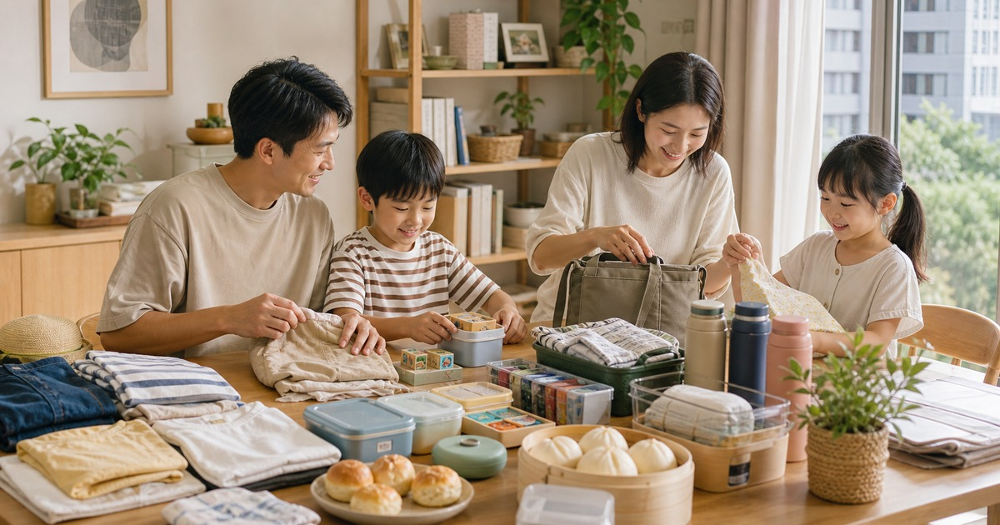

親子家庭的週末補貨清單：童裝、玩具、早餐與兒童用品
把週末補貨分成衣物、玩具、早餐和出門用品，讓親子家庭少一點臨時採買。

親子家庭的週末，常常不是沒有行程，而是每件事都需要一點準備。童裝要替換、玩具要輪替、早餐要快速上桌，水壺和外出小物也要在出門前找得到。把補貨分成四個抽屜思考，週一早上會輕鬆很多。
先補會消耗的，再補可愛的
童裝、襪子、內搭、早餐食材和清潔用品，是親子家庭最容易突然不夠的東西。這些物件先補齊，玩具與禮物再慢慢挑，家裡比較不會被臨時需求推著跑。
如果是替孩子送禮，也建議先問年齡、尺寸和家長偏好。實用不等於無聊，真正會被使用的物品，通常比只打開一次的玩具更有存在感。
週末補貨也可以把孩子一起納入整理流程。讓孩子知道玩具放哪裡、早餐備品在哪一層，日常會慢慢形成可預期的節奏。
- 童裝：先看季節、尺寸和好洗程度。
- 早餐：選擇容易保存、準備時間短的品項。
- 玩具：先看安全標示、年齡與收納方式。
童裝用一週行程來排
孩子的衣物不只看可愛，也要看一週會遇到的場景：上學、戶外、才藝課、拜訪親友或在家活動。耐洗、好活動、容易搭配，會比單件漂亮更重要。
週末整理衣櫃時，可以先把明顯不合身或季節不對的衣物收起來，再補真正缺的款式，避免重複買到相似品。
若家中有不同年齡的孩子，用品更要分層。大孩子的文具和小玩具，不應和幼兒會放入口中的物件混在同一個籃子裡。
- 上學日：舒適、耐洗、好穿脫。
- 戶外日：活動量、帽子與備用衣物。
- 拜訪日：乾淨整齊，比過度正式更重要。
Elite 嚴選
玩具要能輪替，也要能收尾
玩具不是越多越好。一次拿出太多，孩子容易分心，大人也很難收拾。比較好的做法，是把玩具分成安靜遊戲、動手操作、角色扮演和外出小物，每次只留一部分在外面。
花兒朵朵、Arbea 購物、Baby 童衣、包寧安／櫻桃小丸子官方旗艦店與花漾饅頭屋，可以從童裝、玩具、母嬰用品和早餐點心方向延伸；選購時請看適用年齡、成分標示、尺寸和保存方式。
外出用品也可以固定成一個小袋：濕紙巾、備用衣物、餐具和小玩具分層放，臨時出門時不必重新準備。
早餐和出門用品放在同一條動線
週一早晨最怕一邊找襪子，一邊準備早餐。水壺、餐盒、外套、濕紙巾和早餐備品如果能放在固定區域，早上的摩擦會少很多。
早餐補貨不需要複雜，重點是能快速上桌、保存清楚、家人知道怎麼拿。若涉及過敏、特殊飲食或幼兒食用限制，請優先看標示並依照照顧者判斷。
- 外出包固定放補充用品。
- 早餐備品標示日期。
- 玩具和食物分區收納。
週末只做一次小盤點
不需要每天整理家庭用品。每週固定 15 分鐘，把衣物、早餐、清潔和外出用品看一輪，就能減少很多臨時補買。
補貨清單越短越容易持續。先讓家庭日常穩定，再把預算留給真正有紀念感的禮物或親子活動。
同主題品牌參考
FAQ
這篇文章適合直接照單購買嗎？
不建議。每個家庭、通勤路線、身形、膚況或空間條件都不同，請先用文中的順序盤點自己的使用情境，再回到商品頁確認規格。
商品價格、活動或庫存可以以本文為準嗎？
不可以。價格、活動、庫存、規格、尺寸與配送條件都可能變動，請以下單前看到的商品頁或店家頁公告為準。
涉及保養、照護、兒童或健康用品時要注意什麼？
請把本文視為一般生活整理與選購情境參考；若涉及健康、照護、皮膚、兒童食用或輔具使用，應優先看商品標示並諮詢合格專業人員。
下一步建議
先整理家中最常缺的用品，再依童裝、早餐、玩具與外出動線補貨。
重要警語
兒童用品、食品與玩具請依商品標示、適用年齡、成分與照顧者判斷選擇；本文不宣稱教養或學習效果。
本文含品牌／商品導購連結；若你透過部分商品連結前往選購，Elite Fashion 可能取得合作收益。本文仍以編輯判斷與使用情境整理為主，價格、規格、活動與庫存請以商品頁公告為準。